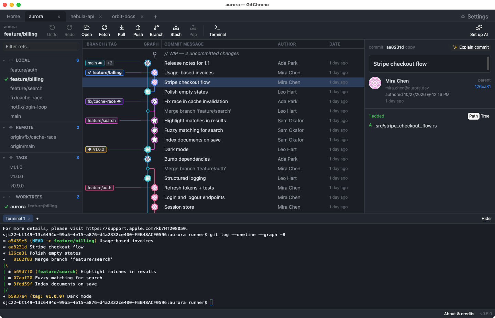

GitChrono gives you a colorful commit graph, line-by-line staging and instant diffs — in a native app that opens huge repositories in seconds.

The visual Git workflow you know, rebuilt from scratch as a native app with nothing in between you and your repository.
Every branch, tag and stash in one colorful graph, newest first — with your current branch and uncommitted work right on top.
Pick the exact lines you want, or whole blocks of changes, or several files at once. Clean commits without touching the terminal.
A true desktop app, not a website in a wrapper. Repositories with a hundred thousand commits open in seconds and scroll smoothly.
Checkout, branch, tag, merge, rebase, cherry-pick, revert and reset straight from the graph, the sidebar or the file list.
Edit in your editor, commit in the terminal — GitChrono notices instantly, and stays quiet while it's in the background.
Uses the git you already have, so your SSH keys, passwords and signing just work. Settings sets up your name, email and SSH keys for you.
A tab per repository, restored on launch. Add a parent folder once and every repository inside it is one click away.
A real shell in every repository, with colors, completion and selection. Open as many as you like with ⌥T.
⌘P runs any action, checks out any branch or opens any repository. ⌘F searches history by message, author or commit ID.
Commit, reset, rebase, checkout, branch or tag: ⌘Z takes it back without ever overwriting your uncommitted work.
Reorder, squash and reword commits, resolve conflicts side by side, and follow any file through history and blame.
One click writes a commit message in your repository's style, or explains what any commit does, using your own OpenAI, Anthropic, Mistral, Gemini or local model.
// You click Commit in GitChrono… git commit -m "Stripe checkout flow" // …your own git does the work: ✓ your hooks run ✓ your key signs the commit ✓ same result as the terminal // Staging a few lines works the same way: git apply --cached # just the lines you picked
Free for personal and commercial use. Uses git 2.40 or newer (included on Windows). Install steps and requirements.
Yes. The Git client is free and open source under the Apache-2.0 licence. Optional AI features work with your own API key, or with prepaid credits later.
GitChrono is a real desktop app, not a web page in a wrapper: it opens huge repositories in seconds, stays light on memory and battery, and works without an account.
macOS (Apple Silicon and Intel), Windows 64-bit and Linux (x86_64 and ARM64).
No. It works locally with your own git. AI features only send the changes involved, trimmed and with passwords and keys removed, to the provider you choose, and only when you click an AI button.
GitChrono is in alpha: use it at your own risk. Keep a pushed remote or a backup of repositories you can't afford to lose.